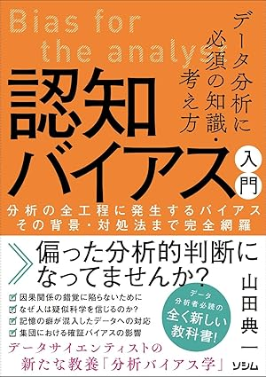
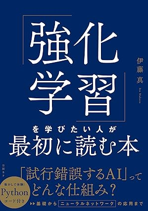
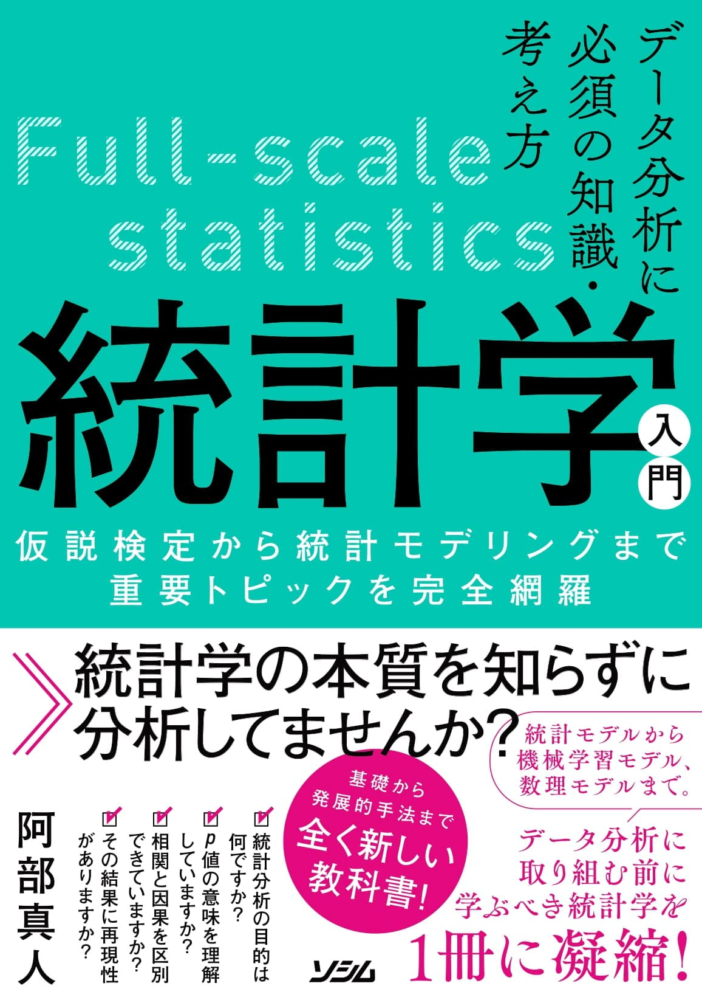
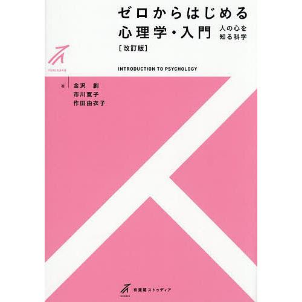
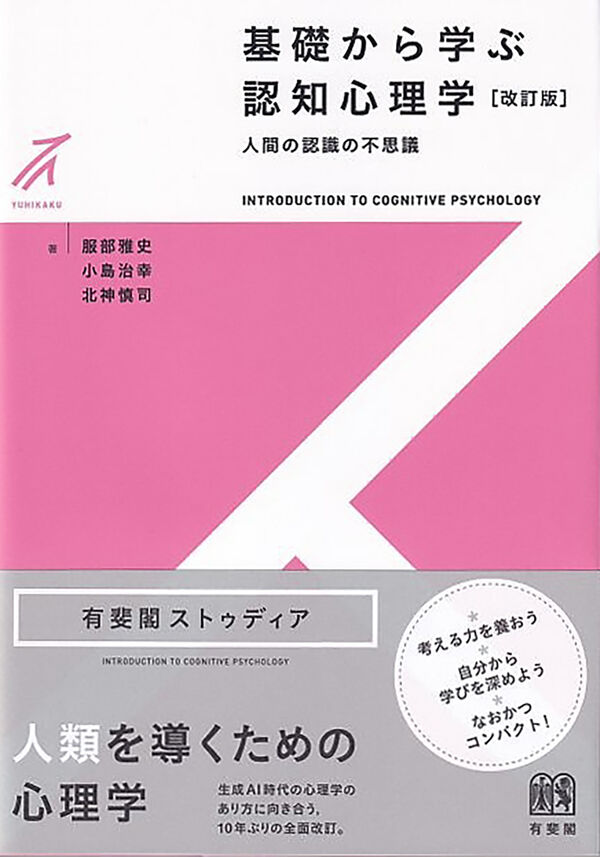
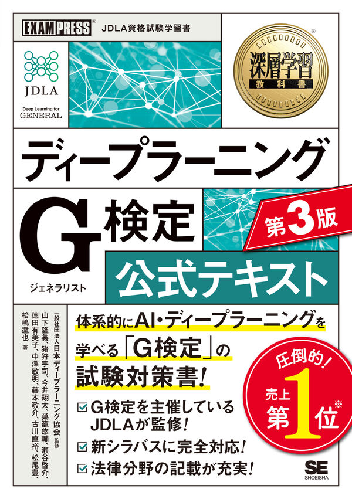
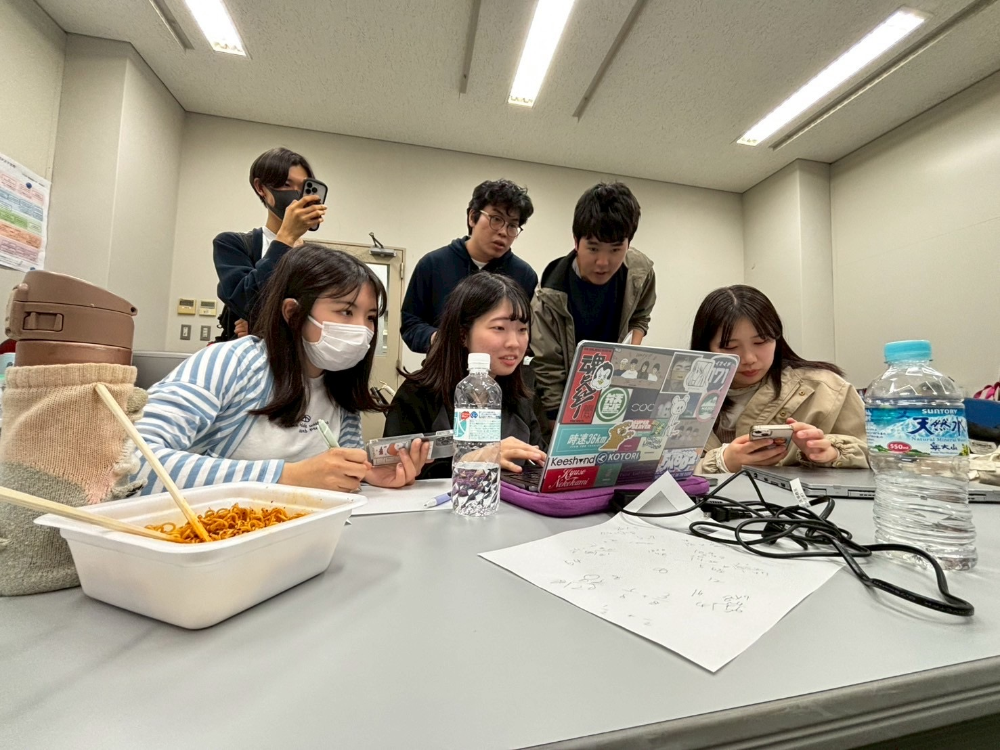
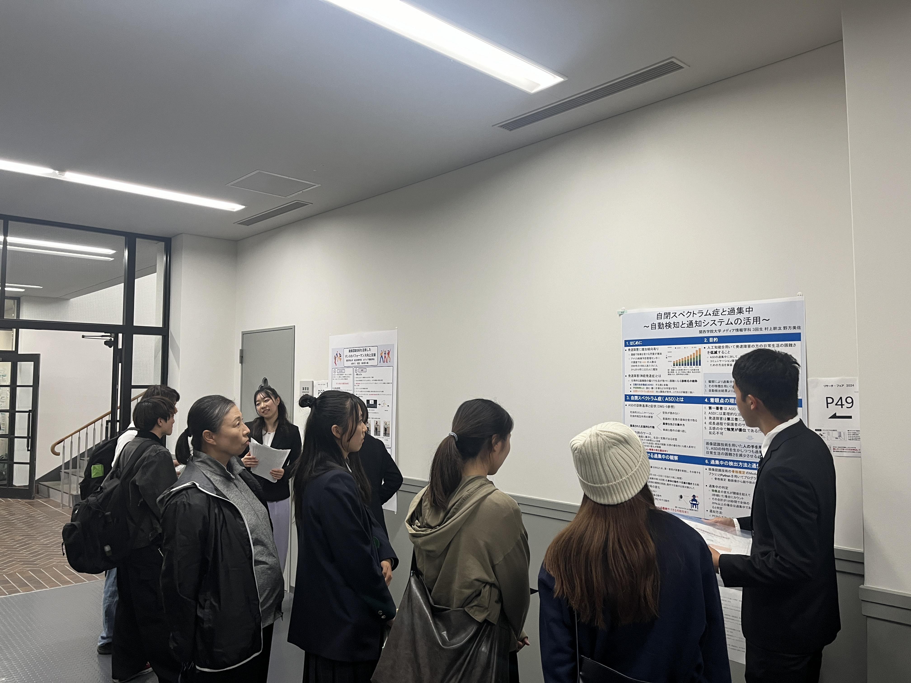
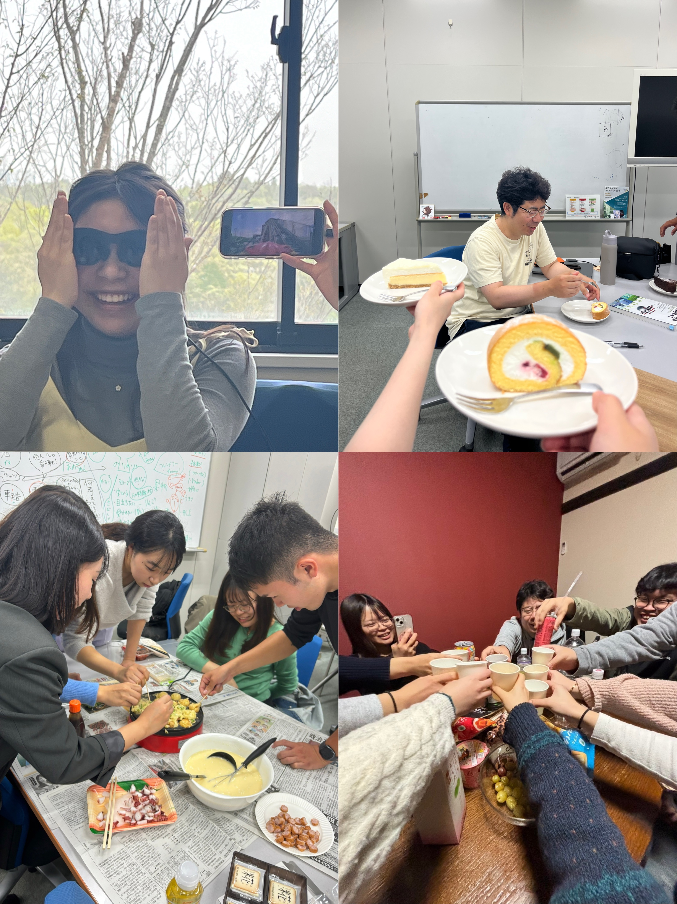

活動
ゼミでやっていること

研究発表と教師役の実践
下記で紹介する書籍を章ごとに分担して読み、内容をメンバーに向けて発表します。 研究では興味・関心に基づいたテーマをチームまたは個人で決め、進み具合を定期的に報告しながら、 メンバーや先生のアドバイスを受けて作品や論文にまとめます。

教え合い・共同作業
発表の準備や研究の作業は、メンバー同士で相談しながら進めます。わからないところは気軽に聞き合い、教え合うことで、一人では気づけなかった視点や解決策が見つかります。

ディスカッション
ゼミでは学んだ内容を発表して終わりにせず、みんなで話し合います。学年や得意分野の違う学生と教員が一緒になって、お互いに説明し合ったり、疑問点を出し合ったり、具体例を考えたりします。意見を交わすことで、人工知能と認知科学への理解がより深まります。

面談
研究の進め方について、個人やチーム単位で先生と話す時間があります。それぞれの研究テーマや進み具合に合わせて、具体的なアドバイスを受けられます。
ゼミで読んでいる書籍

認知バイアス
書籍『データ分析に必須の知識・考え方 認知バイアス入門』を用いて、認知バイアスへの理解を深め、実生活においてどのような形で現れるかを考察します。

強化学習
書籍『強化学習を学びたい人が最初に読む本』を通して、強化学習の基本的な考え方を学びます。

統計学
データ分析に必要な統計学の基礎から学び、プログラミングやツールを用いて実践的に応用します。

心理学
書籍『ゼロからはじめる心理学・入門〔改訂版〕 人の心を知る科学』を用いて、人間の行動や心の仕組みについて、心理学の基礎から幅広く学びます。

認知科学
書籍『基礎から学ぶ認知心理学〔改訂版〕 人間の認識の不思議』を用いて、知覚・注意・記憶など、人がものごとを認識する仕組みを基礎から学びます。

ディープラーニング
書籍『ディープラーニング G検定 公式テキスト 第3版』を用いて、人工知能やディープラーニングの基礎知識を幅広く学びます。
学生の希望から始まった勉強会やイベント

プログラミング
「もっと学びたい」という学生の声をきっかけに、プログラミングの勉強会を開いています。
2024年度は基礎を学びながら一問一答形式で実力を固め、2025年度はOpenCVなどのツールを使って画像認識に取り組んでいます。2026年度は生成AIを利用したプログラミングにもチャレンジしています。

リサーチフェア
関心に基づいたテーマでリサーチを行った成果物の中から、一部はリサーチフェアに参加し、その成果を発表します。
大用ゼミでは、2024年度に二つのチームが優秀賞および奨励賞を受賞しました。

楽しいイベント
心理学ゲーム、AR体験、たこ焼きパーティー、ご飯会など、さまざまな交流イベントを通して、ゼミメンバーとのつながりも大切にしています。